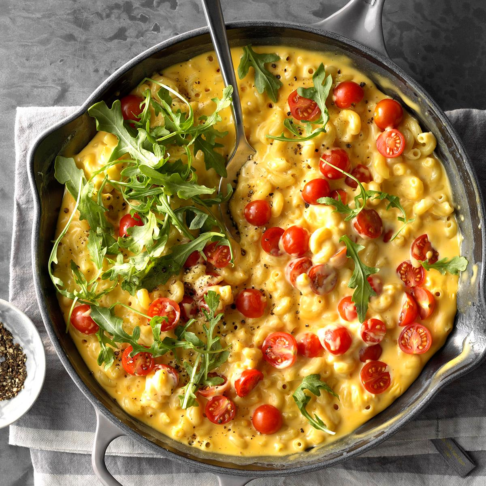

Skillet Mac & Cheese

This super creamy mac 'n' cheese is so simple it seems almost too easy! Kids really go for the rich cheese flavor, but I've never met an adult who didn't love it too.
Prep time=5 mins || Cook time=25 hrs || Total time=30 mins
Ingredients
2 cups uncooked elbow macaroni (about 8 ounces)
2 tablespoons butter
2 tablespoons all-purpose flour
1-1/2 cups half-and-half cream
3/4 pound process cheese (Velveeta), cubed
Optional toppings: fresh arugula, halved cherry tomatoes and coarsely ground pepper
Directions
Cook macaroni according to package directions; drain.
Meanwhile, in a large cast-iron or other heavy skillet, melt butter over medium heat. Stir in flour until smooth; gradually whisk in cream. Bring to a boil, stirring constantly. Cook and stir until thickened, about 2 minutes. Reduce heat; stir in cheese until melted.
Add macaroni; cook and stir until heated through. Top as desired.In a small bowl, beat cream cheese and soup until blended. Stir in mushrooms. Pour over chicken. Cover and cook until chicken is tender, 1 hour longer. Serve with pasta or rice. If desired, sprinkle with oregano.
Nutrition facts
1-1/2 cups: 600 calories, 37g fat (23g saturated fat), 144mg cholesterol, 1185mg sodium, 40g carbohydrate (9g sugars, 1g fiber), 23g protein.